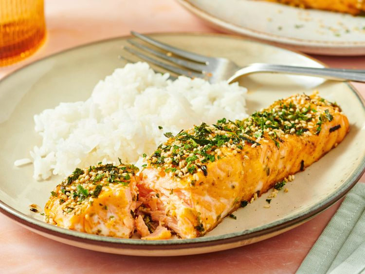

Home
4-Ingredient Furikake Salmon

- 1 pound salmon fillets
- Salt and freshly ground black pepper to taste
- 2 tablespoons Kewpie Mayonnaise
- 2 teaspoons Sriracha, or to taste
- 2 tablespoons furikake seasoning
-
Gather all ingredients. Preheat the oven to 375 degrees F (190 degrees
C).
-
Pat salmon filets dry; sprinkle with salt and pepper. Stir kewpie
mayonnaise and sriracha together in a small bowl; brush liberally over
salmon. Sprinkle furikake over the salmon.
-
Bake in the preheated oven until fish flakes easily with a fork, about
20 minutes.
- Serve immediately.